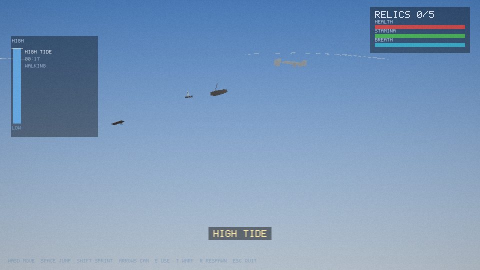

Raw frames: tide-cycle/frame_0000.png … frame_0059.png — assemble with
ffmpeg -framerate 10 -i tide-cycle/frame_%04d.png -vf scale=1280:-2 -c:v libx264 -pix_fmt yuv420p tide-cycle.mp4
or ffmpeg -framerate 10 -i tide-cycle/frame_%04d.png tide-cycle.gif. Animated version: tide-cycle.apng.